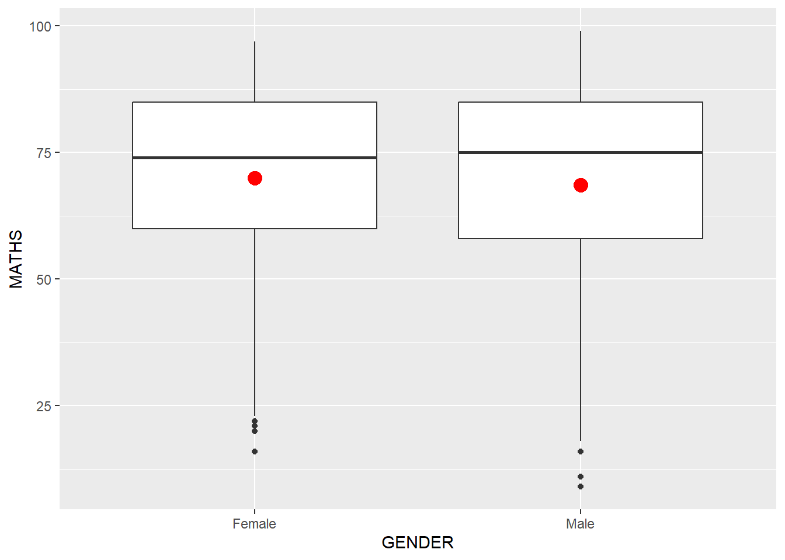

Code
pacman::p_load(tidyverse)The code chunk below uses p_load() of pacman package to check if tidyverse pakcges are installed in the computer. If yes, then they will be launched into R environment.
pacman::p_load(tidyverse)getwd()[1] "C:/kekekay/ISSS608-VAA/Hands_on_exercise/Hands_on_ex1"exam_data <- read_csv("Exam_data.csv")Rows: 322 Columns: 7
── Column specification ────────────────────────────────────────────────────────
Delimiter: ","
chr (4): ID, CLASS, GENDER, RACE
dbl (3): ENGLISH, MATHS, SCIENCE
ℹ Use `spec()` to retrieve the full column specification for this data.
ℹ Specify the column types or set `show_col_types = FALSE` to quiet this message.exam_data# A tibble: 322 × 7
ID CLASS GENDER RACE ENGLISH MATHS SCIENCE
<chr> <chr> <chr> <chr> <dbl> <dbl> <dbl>
1 Student321 3I Male Malay 21 9 15
2 Student305 3I Female Malay 24 22 16
3 Student289 3H Male Chinese 26 16 16
4 Student227 3F Male Chinese 27 77 31
5 Student318 3I Male Malay 27 11 25
6 Student306 3I Female Malay 31 16 16
7 Student313 3I Male Chinese 31 21 25
8 Student316 3I Male Malay 31 18 27
9 Student312 3I Male Malay 33 19 15
10 Student297 3H Male Indian 34 49 37
# ℹ 312 more rowsggplot(data = exam_data,
aes(x=RACE)) +
geom_bar()
ggplotlibrary(ggplot2)
#R graphic
hist(exam_data$MATHS)
#ggplot
ggplot(data=exam_data, aes(x = MATHS)) +
geom_histogram(bins=10,
boundary = 100,
color="black",
fill="grey") +
ggtitle("Distribution of Maths scores")

While both approaches achieve similar results, the ggplot2 version can be easily modified and extended with additional layers, themes, and scales without fundamentally altering the underlying code structure. more suitable for complex visualization.
ggplot() functionggplot(data=exam_data)
ggplot(data=exam_data,
aes(x= MATHS))
#| fig-cap: "Geometric Objects: geom_bar VS geom_dotplot vs geom_histogram()"
#| fig-subcap:
#| - "plots a bar chart by using geom_bar()"
#| - "geom_dotplot() of ggplot2 is used to plot a dot plot"
#| - "turn off the y-axis & change the binwidth to 2.5"
#| - "create a simple histogram"
#| layout-ncol: 4
#| column: page
ggplot(data=exam_data,
aes(x=RACE)) +
geom_bar()
ggplot(data=exam_data,
aes(x = MATHS)) +
geom_dotplot(dotsize = 0.5)Bin width defaults to 1/30 of the range of the data. Pick better value with
`binwidth`.ggplot(data=exam_data,
aes(x = MATHS)) +
geom_dotplot(binwidth=2.5,
dotsize = 0.5) +
scale_y_continuous(NULL,
breaks = NULL)
ggplot(data=exam_data,
aes(x = MATHS)) +
geom_histogram() `stat_bin()` using `bins = 30`. Pick better value with `binwidth`.


#| fig-cap: "Modifying a Geometric Object "
#| fig-subcap:
#| - "by changing geom()"
#| - "by changing aes()"
#| layout-ncol: 2
#| column: page
ggplot(data=exam_data,
aes(x= MATHS)) +
geom_histogram(bins=20,
color="black",
fill="light blue")
ggplot(data=exam_data,
aes(x= MATHS,
fill = GENDER)) +
geom_histogram(bins=20,
color="grey30")

#| fig-cap: "Geometric Objects: geom-density() VS geom_boxplot()"
#| fig-subcap:
#| - "geom-density() computes and plots kernel density estimate"
#| - "two kernel density lines by using colour or fill arguments of aes()"
#| - "geom_boxplot() displays continuous value list"
#| - "adding notch to help visually assess whether the medians of distributions differ"
#| layout-ncol: 4
#| column: page
ggplot(data=exam_data,
aes(x = MATHS)) +
geom_density()
ggplot(data=exam_data,
aes(x = MATHS,
colour = GENDER)) +
geom_density()
ggplot(data=exam_data,
aes(y = MATHS,
x= GENDER)) +
geom_boxplot()
ggplot(data=exam_data,
aes(y = MATHS,
x= GENDER)) +
geom_boxplot(notch=TRUE) 


#| fig-cap: "Geometric Objects: geom_violin VS geom_point()"
#| fig-subcap:
#| - "geom_violin is designed for creating violin plot to compare several distributions side by side"
#| - "geom_point() is especially useful for creating scatterplot"
#| layout-ncol: 2
#| column: page
ggplot(data=exam_data,
aes(y = MATHS,
x= GENDER)) +
geom_violin()
ggplot(data=exam_data,
aes(x= MATHS,
y=ENGLISH)) +
geom_point() 

plot the data points on the boxplots by using both geom_boxplot() and geom_point().
ggplot(data=exam_data,
aes(y = MATHS,
x= GENDER)) +
geom_boxplot() +
geom_point(position="jitter",
size = 0.5) 
stat()ggplot(data=exam_data,
aes(y = MATHS, x= GENDER)) +
geom_boxplot()
ggplot(data=exam_data,
aes(y = MATHS, x= GENDER)) +
geom_boxplot() +
stat_summary(geom = "point",
fun="mean",
colour ="red",
size=4) 
ggplot(data=exam_data,
aes(y = MATHS, x= GENDER)) +
geom_boxplot() +
geom_point(stat="summary",
fun="mean",
colour ="red",
size=4) 
ggplot(data=exam_data,
aes(x= MATHS, y=ENGLISH)) +
geom_point() +
geom_smooth(linewidth=0.5)`geom_smooth()` using method = 'loess' and formula = 'y ~ x'
ggplot(data=exam_data,
aes(x= MATHS,
y=ENGLISH)) +
geom_point() +
geom_smooth(method=lm,
size=0.5)Warning: Using `size` aesthetic for lines was deprecated in ggplot2 3.4.0.
ℹ Please use `linewidth` instead.`geom_smooth()` using formula = 'y ~ x'
facet_wrap()The facet_grid() function create a grid of plots by specifying rows and columns based on factors.
# Assuming exam_data is already loaded and contains columns MATHS and CLASS
ggplot(data=exam_data, aes(x=MATHS)) +
geom_histogram(bins=20) +
facet_grid(CLASS ~ .) # CLASS variable defines the rows
ggplot(data=exam_data, aes(x=MATHS)) +
geom_histogram(bins=20) +
facet_grid(. ~ CLASS) # CLASS variable defines the columns
facet_wrap wraps a 1d sequence of panels into 2d. This is generally a better use of screen space than facet_grid because most displays are roughly rectangular.
ggplot(data=exam_data,
aes(x= MATHS)) +
geom_histogram(bins=20) +
facet_wrap(~ CLASS)
ggplot(data=exam_data,
aes(x=RACE)) +
geom_bar()
coord_flip()ggplot(data=exam_data,
aes(x=RACE)) +
geom_bar() +
coord_flip()
ggplot(data=exam_data,
aes(x= MATHS, y=ENGLISH)) +
geom_point() +
geom_smooth(method=lm, size=0.5)`geom_smooth()` using formula = 'y ~ x'
The scatterplot on the right is slightly misleading because the y-aixs and x-axis range are not equal.
ggplot(data=exam_data,
aes(x= MATHS, y=ENGLISH)) +
geom_point() +
geom_smooth(method=lm,
size=0.5) +
coord_cartesian(xlim=c(0,100),
ylim=c(0,100))`geom_smooth()` using formula = 'y ~ x'
#| fig-cap: "theme_gray() VS theme_classic() VS theme_minimal()"
#| fig-subcap:
#| - "horizontal bar chart using theme_gray()"
#| - "horizontal bar chart plotted using theme_classic()"
#| - "horizontal bar chart plotted using theme_minimal()"
#| layout-ncol: 3
#| column: page
ggplot(data=exam_data,
aes(x=RACE)) +
geom_bar() +
coord_flip() +
theme_gray()
ggplot(data=exam_data,
aes(x=RACE)) +
geom_bar() +
coord_flip() +
theme_classic()
ggplot(data=exam_data,
aes(x=RACE)) +
geom_bar() +
coord_flip() +
theme_minimal()